Khu du lịch ở Vũng Tàu
Vũng Tàu có vô vàn nơi thú vị để khám phá và trải nghiệm. Điển hình như:
1. Khu Dã Ngoại Hồ Bầu Sen LaLaLand
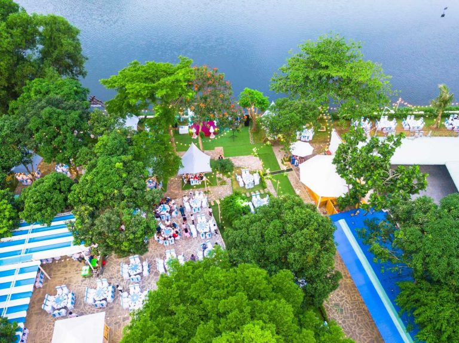2. Hải đăng Vũng Tàu
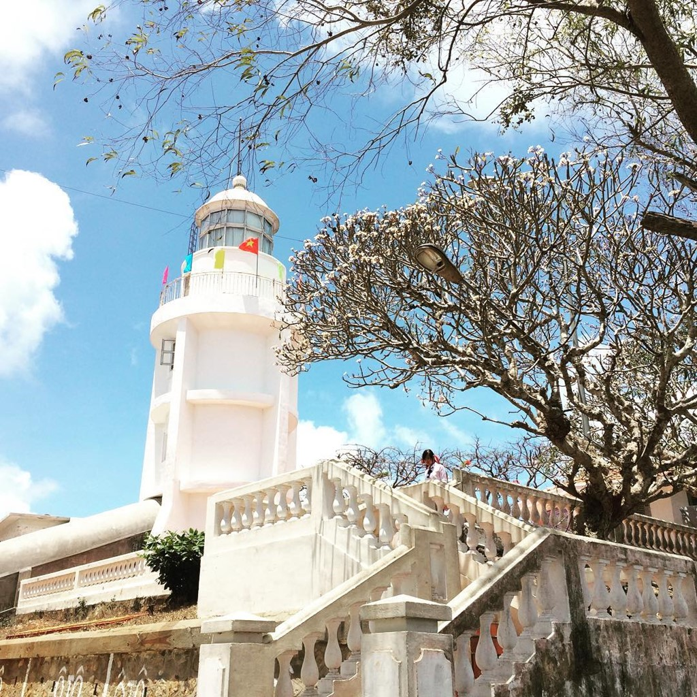3. Mũi Nghinh Phong

Cổng trời trong truyền thuyết tại Mũi Nghinh Phong
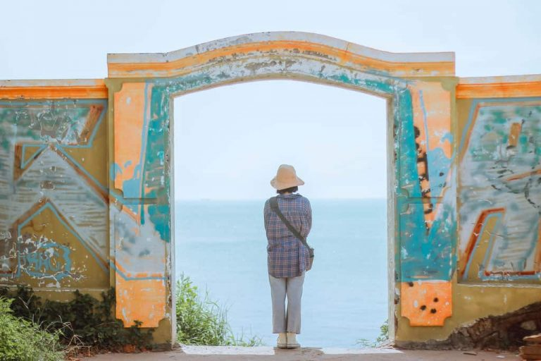Thành phố biển nổi tiếng với cảnh đẹp, hải sản tươi ngon và điểm du lịch hấp dẫn
Khí hậu ôn hòa, mát mẻ quanh năm, thích hợp du lịch mọi thời điểm.
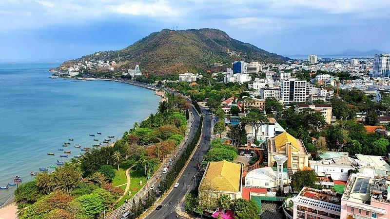Đến với Vũng Tàu là đến với thiên đường ẩm thực địa phương, nơi thực thần được chiều chuộng chiếc bụng đói thường xuyên "ca cẩm" với đa dạng các món ăn hấp dẫn.
1. Bánh khọt Vũng Tàu
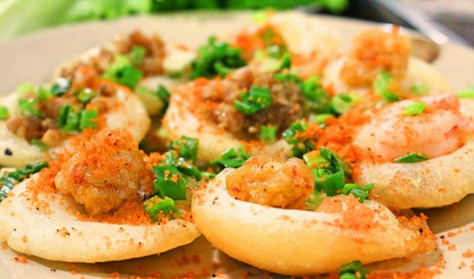2. Gỏi cá mai
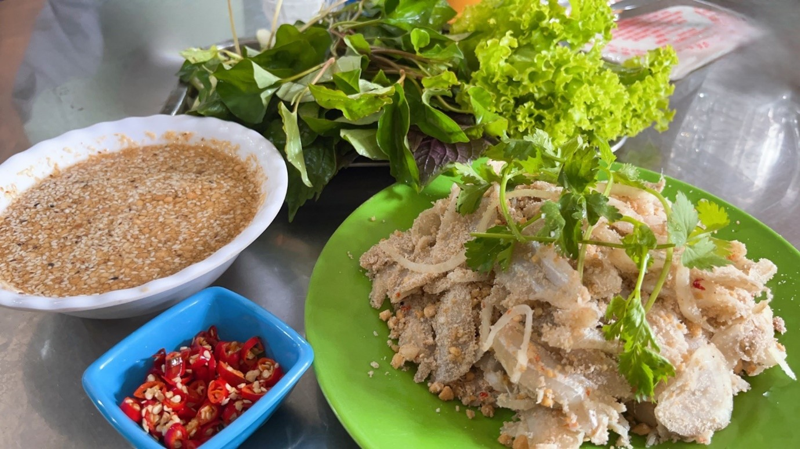3. Bún tôm tích (tôm búa)
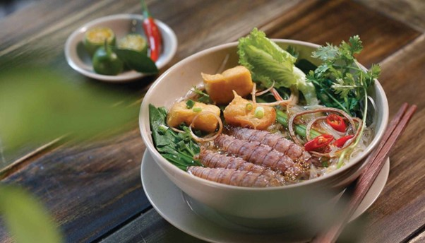Vũng Tàu có vô vàn nơi thú vị để khám phá và trải nghiệm. Điển hình như:
1. Khu Dã Ngoại Hồ Bầu Sen LaLaLand
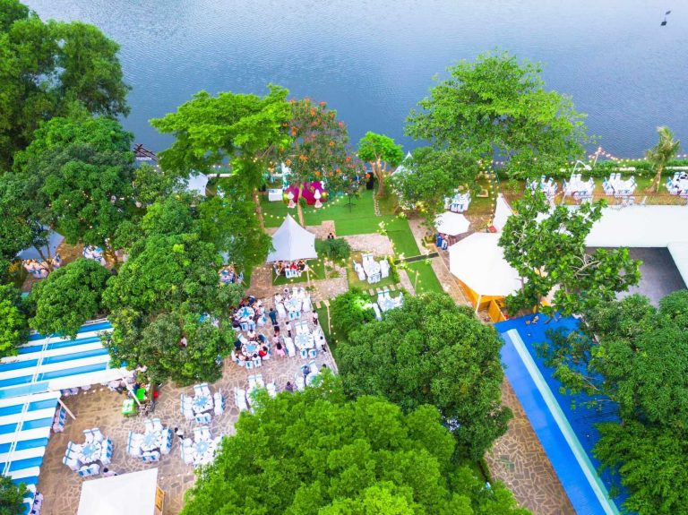2. Hải đăng Vũng Tàu
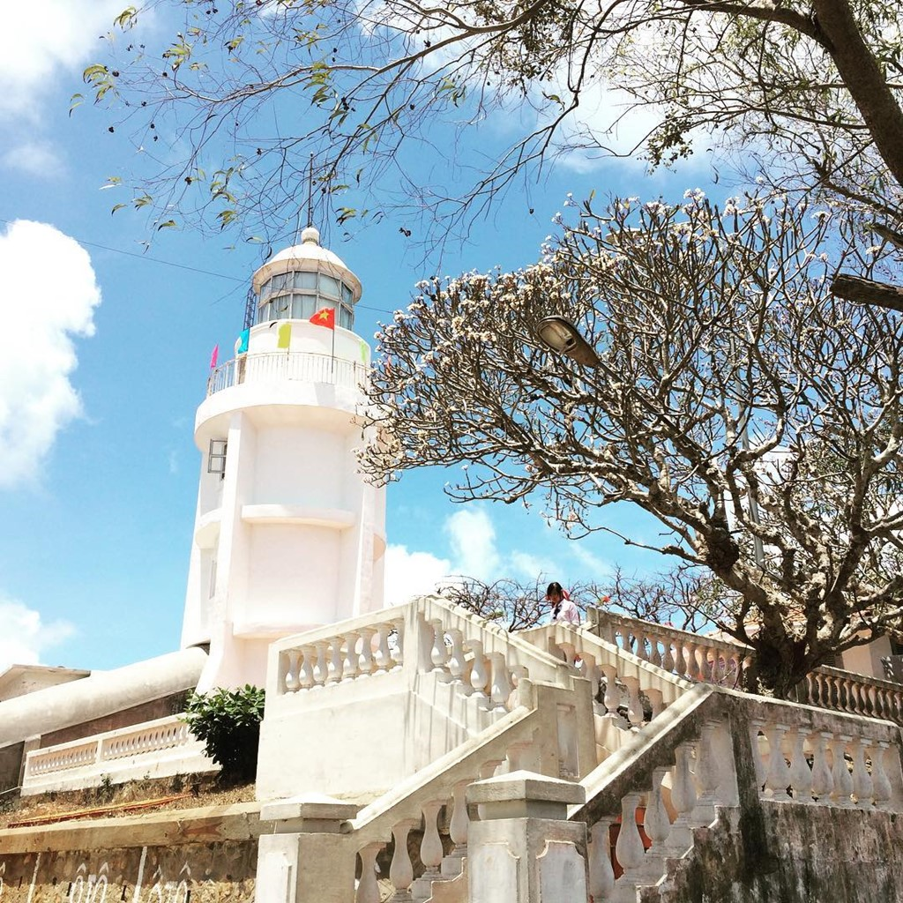3. Mũi Nghinh Phong
Cổng trời trong truyền thuyết tại Mũi Nghinh Phong
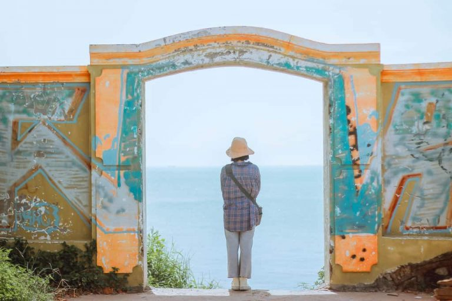Vũng Tàu có truyền thống lâu đời về nghề đánh bắt thủy sản. Thế nên văn hóa ngư dân được thể hiện ở các lễ hội làng chài. Ngoài ra, biểu tượng văn hóa nổi bật ở đây có thể kể đến như tượng chúa Ki-tô:
1. Lễ hội Nghinh Ông (lễ thờ cá voi)
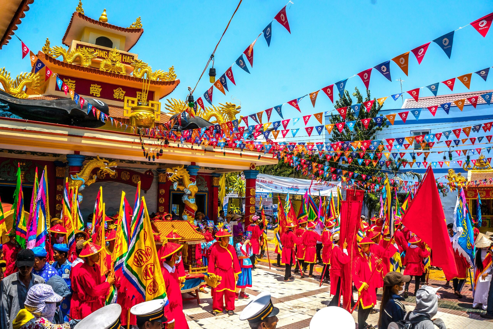2. Tượng chúa Ki-tô
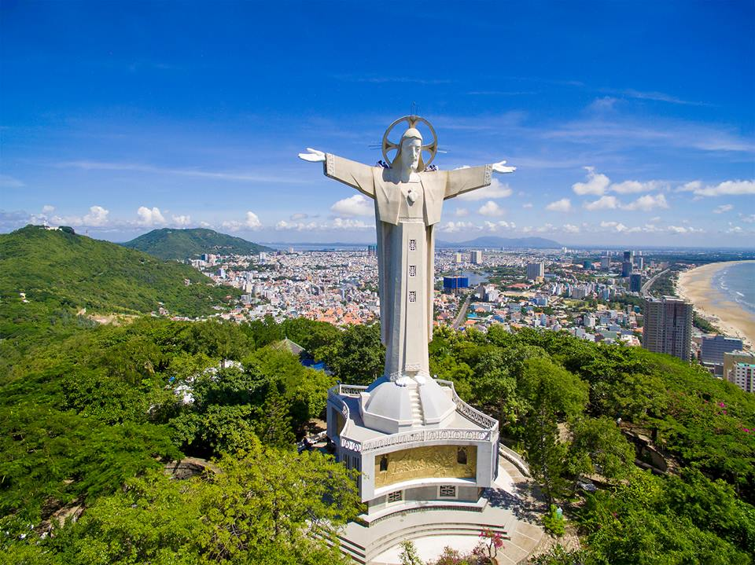Họ luôn sẵn sàng giúp đỡ du khách, tạo cảm giác thoải mái và gần gũi, có lối sống gắn bó với biển và thiên nhiên, luôn sáng tạo và hòa nhập.
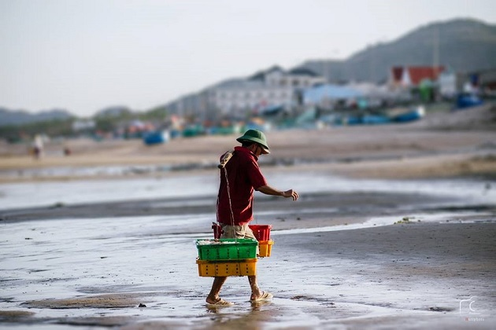